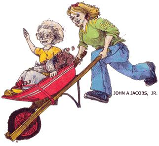

Issue # 189 - December/January 2002
Garden seed catalogs aren't just an order sheet, they're a connection to fond memories of` gardens before.
Not a gripping whodunit nor a deep philosophical tome. No Gothic bodice-ripper; no glossy, coffee-table photography. Not even the latest from Oprah's Book Club.
I am engrossed in printed matter that offers a warm, green-and-gold ray of hope on a cold, blustery, inhospitable day. I am reading a seed catalog.
It seems as though the Halloween party masks have barely been thrown out when my mailbox and those of others like me, lovers of soil and compost all-start to fill with gardening catalogs. I love them all: artfully printed, upscale, imported-veggie sophisticates; humble, almost hand-printed booklets from companies that have been in business forever; mainstream gardener's journals full of tough tools and sound advice.
And here I am, lusting after bright green, ruffled lettuce, aromatic purple basil and tomatoes guaranteed to grow like Jack's beanstalk. Will six lovely zucchini plants be too much? Will five types of lettuce be enough?
For a Georgia-born, many-years-in-East-Texas gal, the seven years I've gardened in Wyoming have been a challenge. The first two springs were major disappointments. I'd done my homework, I thought. Checked out books from the local Master Gardener's program, pored over pamphlets from the Ag Extension Service on how to successfully garden at an altitude of 5,000-plus feet, with alkaline soil, rapidly fluctuating temperatures, brutal winds, intense solar radiation, often nonexistent rainfall, and a long list of critters, large and small, licking their chops to break their winter diet with tender greens from my garden.
"OK," I thought. "I can handle this."
Mother Nature thought differently.
All I'd been warned about happened - winds that stripped bean-plants bare, soil that dried like cement in the sun or turned to dark gray glue when the Wyoming skies grudgingly released a rain shower. Tomatoes blistered before my eyes and earwigs made gracious haciendas in the cabbage. But I fought back - learned more, put into practice gardening wisdom shared by longtime local gardeners, and the last few years have seen great improvement. I continue with the faith that the seedlings I start and lovingly tend under growlights in the utility room will flourish and eventually take hold and thrust their green shoots toward the brilliant Wyoming summer sky.
As I read these catalogs I drool over terms such as "smooth-skinned, ripening to a deep, rich, crimson red," or more importantly, "drought tolerant and hardy," and I think of my darling mother, Miss Kate.
Miss - a Southern affectation for genteel widow ladies - Kate had the greenest thumb of anyone I've known and loved nothing more than digging in the dirt. She had the knack, the gift of one "born to garden."
Dried, dormant pieces of twig went into the ground with water and a kind word, then flourished so profusely they had to be pruned back hard each year lest they take over the entire yard. A few seeds picked from a particularly delicious tomato served at a Women's Club luncheon, became a staple of summer dinners. Whatever it was, it grew for her, often with a vengeance. There was the wisteria, originally a snippet from a friend, that grew so high and heavy it almost tore the carport from the side of the house.
Miss Kate loved it all. The car trunk filled with bags of well-rotted manure from a local farm. The compost pile cooking leaves, pinestraw and kitchen waste into "black gold." She puttered along, amending the rock-solid, Georgia red clay into stuff you could turn with your hands.
Whether it was flowers, which grew riotously in her many perennial beds, or vegetables in tidy rows, it was to her garden she turned for what she called "life relief."
Christmas 1987, we gave Miss Kate what she said was the best present she ever received, a shiny new wheelbarrow, bright fire-engine red with a white racing stripe down the side. We even, after several cups of Christmas cheer, piled her in and took her, doing a regal wave, for a ride around the neighborhood.
I think of her especially at the beginning of the gardening season, which begins with these seed catalogs, and am grateful that among the many wonderful life lessons she taught me was the powerful, soul-nourishing act of gardening.
As I read these newest catalogs, my spirits lift as the barometer falls, and I am encouraged that this year my garden actually will look like the cover shot. I'm placing an order right now.
So hang a carrot - 'Scarlet Nantes' of course - on a stick in front of me and I'll go forth on the quest for "full-leafed," or "stringless," or "crisp and crunchy." And as I tuck each pampered plant, each miracle-holding seed into the ground, I'll feel Miss Kate beside me, one hand on my shoulder, the other patting the warm Earth, saying, "Grow, baby, grow."
Lindsay Webb wrestles a garden from the ground near Casper, Wyoming.
|
 |
|
|